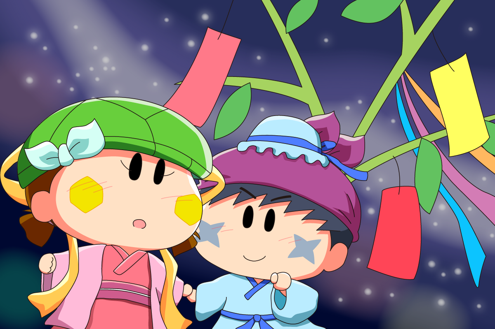
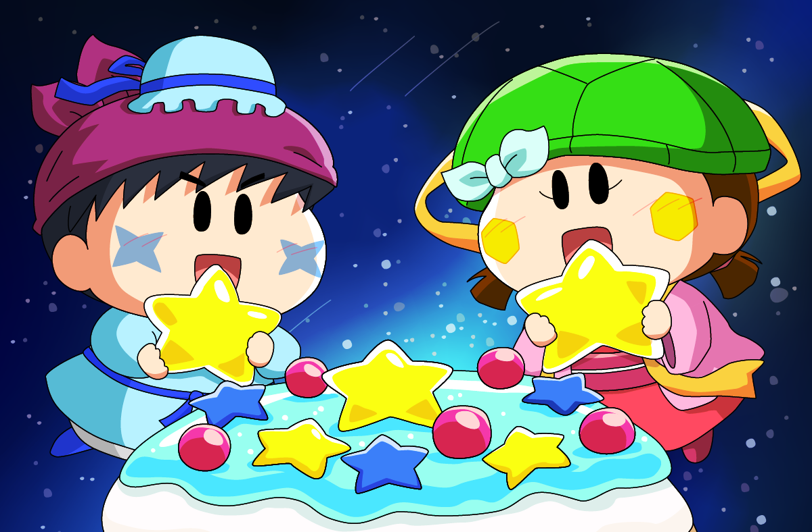
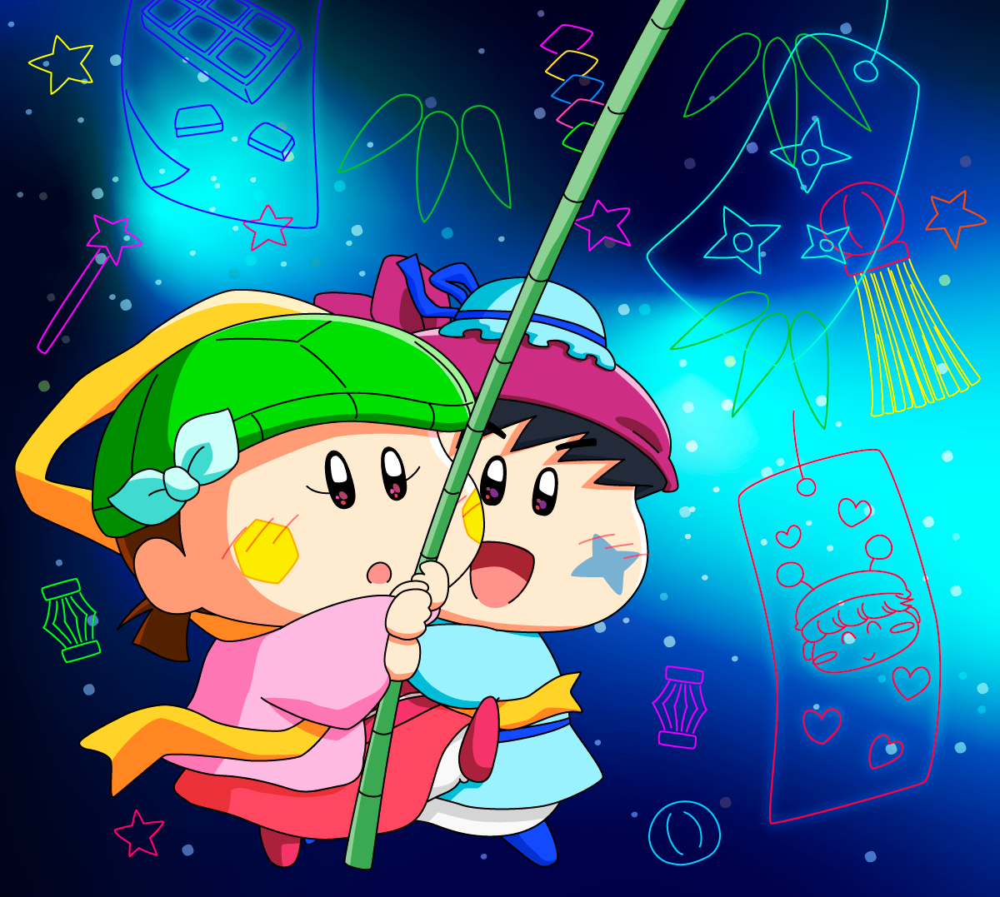

ここ数年、毎年のように七夕の時期にサスカメ絵を描いているので、過去４年分の七夕サスカメ絵をまとめてみました。
といっても、最初の１枚目はなんと２０１６年のイラスト・・。
２０１６年から画力が上がっているかどうかも見られてしまいそう(^◇^;)
それでは最初のサスカメイラストです。
こちらは『サスケ＆カメリ(17)』というタイトルですでに掲載していました。
二人のやりとりはリンク先のページでどうぞです。

自分で書いておきながら、サスケのセリフが眩しすぎる〜。
サスケくん、見た目もかわいいし、相手想いの優しい男の子なのでいろんな女の子からの好意を引きそう。
カメリちゃんものんびりしていられないですね。
そんなサスケはまだまだヤマネちゃんに対する未練を残していそうだけど・・。
続いて２０２３年７月に描いたサスカメ絵です。

カメリ「私〜、お菓子の漬物を〜二人で作るのは〜初めてなの〜」
サスケ「オイラでよければいつでもカメリの力になるぜ。
ところでこの水色のゼリーはどんな味がするんだぜ？」
カメリ「えへへ〜。
これは〜七夕スペシャルと言って〜、サスケくんの〜かっこよさと〜優しさをイメージして作ってみたの〜」
サスケ「ど、どんな味がするんだぜ？（照れまくり）」
お菓子作りはカメリの領域なので、カメリはサスケに対してちょっと積極的になったりして。
この七夕のお菓子はパンナコッタにソーダ味のゼリーが乗ったものをイメージしました。
ちっちゃい男の子とと女の子が仲良くお菓子作りってホント憧れます。
生まれ変わったらぜひとも体験してみたいです(^^)
３枚目は２０２４年７月に描いたサスカメ絵です。

サスケ「カメリ〜、一人だと大変だぜ？
オイラが手伝うぜ！」
カメリ「サスケくん、ありがとう〜（サスケくんがとっても近い〜＞＜）」
サスケ「カメリ？どうしたんだぜ？
さっきより体が熱いぜ！？」
サスカメを密着させたくて描いた、愛の共同作業な絵になります。
手足の短い妖精なので、実際に密着させたらほっぺがぶつかり合うくらいにくっつきそう・・。
カメリのドキドキ（心拍音）がサスケに伝わっているといいな。
伝わったとしてもウブなサスケはおかしな反応をするかもですが・・。
最後の４枚目は２０２５年７月に描いたサスカメ絵です。

サスケ「あ、流れ星！！」
カメリ「ほんとだ〜、早く〜願いごとしなきゃ〜！」
サスケ「オイラも！！」
カメリ「これからもず〜〜っと〜サスケくんと〜いっしょに〜いられますように〜」
サスケ「カメリ〜、聞こえてるぜ！」
カメリ「え〜〜っ」
サスケ「オイラもカメリとずーーと一緒にいられるようお願いしたぜ！」
カメリ「わ〜〜、サスケくん〜〜大好き〜！」
最後は一番ラブラブな展開にしてみました。
お互い疑うようなこともないピュアなところがサスカメCPの醍醐味なんですよね。
意地悪い私は、二人に試練を与えたくなってしまいたくなるけど・・。
たぶん来年の７月もまたサスカメを描いていそうな気がします(^◇^;)
(2025/7/20)